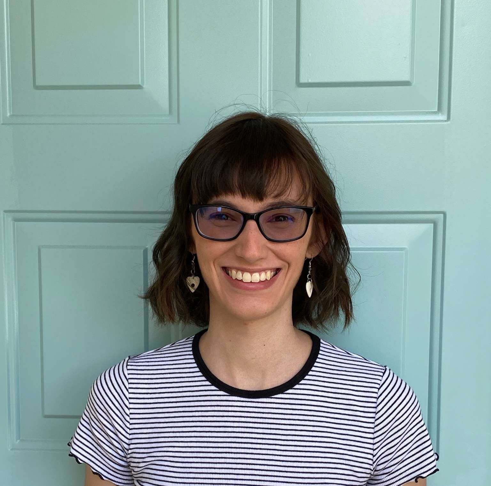

Jea Adams
Graduate Student | Harvard Center for Astrophysics
Jea Adams explores exoplanet atmospheres and the impact of their disks through a combination of observation and simulation. With expertise in spectroscopy and direct imaging, she is constantly striving to understand the complexities of exoplanetary environments and their potential habitability.

Munazza Alam
Assistant Astronomer | STScI
Munazza Alam studies the atmospheres of Jupiters to super-Earths with space-based and large ground-based telescopes. She is also interested in tracing giant planet origins via models of condensation in protoplanetary disks.

Lili Alderson
Postdoc | Cornell University
Lili Alderson studies exoplanet atmosphere observations with the aim of understanding the factors at play in both the planet and the telescope being used. Through understanding the systematic noise properties that instruments have, she hopes to explore smaller and more complex atmospheric signals across mass space.

Artem Anguichine
Postdoc | University of California Santa Cruz
The work of Artem Aguichine is focused on the numerical modeling of circumstellar disks and planetary interiors. His work aim to link the formation conditions to the bulk composition of (exo)planets, with a particular interest for waterworlds.

Natalie Batalha
Professor | University of California Santa Cruz
Natalie Batalha detects and characterizes planets orbiting other stars (exoplanets) with the goal of understanding where are the most likely cradles of life. She also studies exoplanets as a population to understand their diversity.

Natasha Batalha
Research Scientist | NASA Ames Research Center
Natasha Batalha studies planetary atmospheres at the nexus of observation and theory. She has expertise in leveraging and developing open science theoretical models (climate, spectroscopic, chemistry, & cloud) to determine atmospheric properties from spectroscopic observations of exoplanets and Brown Dwarfs.

Anne Dattilo
Graduate Student | University of California Santa Cruz
Anne Dattilo studies exoplanet demographics of small planets. She is interested in mapping the intrinsic population exoplanets to their formation and evolution mechanisms via occurrence rates.

Peter Gao
Staff Scientist | Carnegie EPL
Peter Gao is interested the physics and chemistry of planetary atmospheres and what they can tell us about formation and habitability. He researches aerosol processes and photochemistry and how they impact observations, and investigates these topics using a suite of theoretical atmospheric models.

Anna Gagnebin
Graduate Student | University of California Santa Cruz
My interests lie in the study of water worlds and their characteristics. I focus both on modeling the atmospheres of these exoplanets to compare with observations as well as the demographics of sub-Neptune sized planets.

Tyler Gordon
Postdoc | University of California Santa Cruz
Tyler Gordon is interested in detecting and characterizing transiting exoplanets and their systems, with a focus on understanding the effects of stellar variability on transit observations in order to improve observations of small bodies around sun-like stars.

James Kirk
Research Fellow | Imperial College
James Kirk studies transiting exoplanet atmospheres using low and high-resolution spectroscopy from ground and space-based telescopes. His research focuses on understanding exoplanet formation and evolution via measurements of chemical inventories and atmospheric escape.

Mercedes Lopez-Morales
Associate Director for Science | STScI
Mercedes Lopez-Morales is responsible for oversight of the research infrastructure at STScI as well as its external science policies. Her research focuses on the detection and characterization of exoplanet atmospheres as PI of the ACCESS project and on the detection of Earth-like planets around other stars as co-investigator of HARPS-North.

Mark Marley
Director of LPL | University of Arizona
Mark Marley is ...

Annabella Meech
Postdoc | Harvard Center for Astrophysics
Annabella Meech studies small exoplanet atmospheres in the near-infrared using low and high-resolution spectroscopy. Her research focuses on trying to understand the diversity in the small planet population, and the role of different formation mechanisms, particularly by sampling a range of planet ages.

Sarah Moran
Postdoc | Goddard Space Flight Center
Sarah Moran studies planetary atmospheres within and beyond the Solar System, focusing on their aerosol properties both from atmospheric modeling and experimental laboratory perspectives. She’s most interested in the coupling between chemistry and atmospheric aerosols on worlds without Solar System analogues.

Nicholas Scarsdale
Postdoc | University of California Santa Cruz
Nicholas Scarsdale is interested in making progress towards a comprehensive understanding of small exoplanets. He pursues this through searching for new small exoplanets around bright stars, detailed 3D modelling of terrestrial atmospheres, and, with COMPASS, building grids of model atmospheres and performing retrieval analyses.

Anat Shahar
Staff Scientist | Carnegie EPL
Anat Shahar is interested in understanding planet formation and evolution. She conducts high pressure and temperature experiments to simulate the conditions inside planetary bodies and uses stable isotopes to trace the physical and chemical processes that planets undergo during their formation and evolution.

Johanna Teske
Staff Scientist | Carnegie EPL
Johanna Teske is interested in quantifying the diversity of exoplanet compositions and understanding the origins of that diversity. She pursues these goals using observations of exoplanet masses, radii, atmospheres, and host stars. She loves observing with ground-based telescopes and running.

Hannah Wakeford
Senior Lecturer | University of Bristol
Hannah Wakeford is a senior lecturer in Astrophysics in the School of Physics at the University of Bristol, UK. Hannah leads a group investigating the atmospheres of transiting exoplanets using space-based telescopes.

Nicole Wallack
Postdoc | Carnegie EPL
Nicole Wallack is interested in using complementary types of data to better understand planet formation. She studies exoplanet and brown dwarf atmospheres to investigate how accretion and formation histories are imprinted on the atmospheres of these objects. She also uses direct imaging of protoplanetary disks to constrain planet formation environments.

Nick Wogan
Postdoc | NASA Ames
Nick Wogan uses photochemistry, climate and other theoretical models in combination with observations to better understand the evolution of planetary atmospheres.

Angie Wolfgang
Data Scientist | Eureka Scientific
Angie Wolfgang is a data scientist by day and an astrostatistician by night. Their expertise is in building data-driven models of exoplanet populations using analysis techniques that span traditional statistical methods, machine learning, and artificial intelligence. Angie revels in asking probing questions, seeing the mostly the forest and sometimes the coolest trees, and living the sweet life of a former full-time astronomer who still does astronomy research for fun.